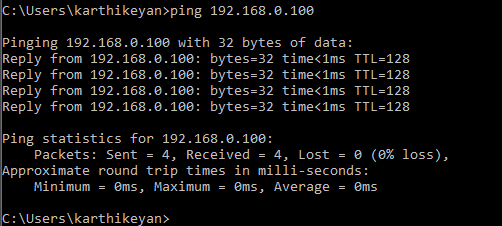
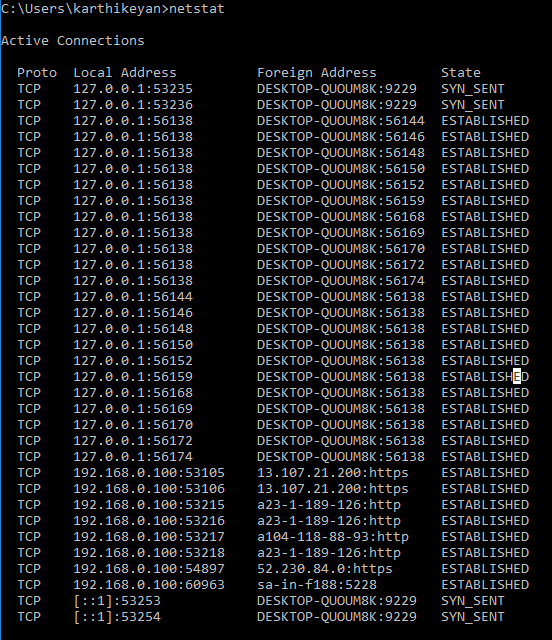

Change Directory: cd\
c: \ users\ Administrator > cd\
c: \
It is the command used to check the reachability of a host on an Internet Protocol
netstat(Network Statistics) is used to display the network connections for TCP(Transmission control protocol) both (incoming and outgoing) and some Network statistics
arp is used